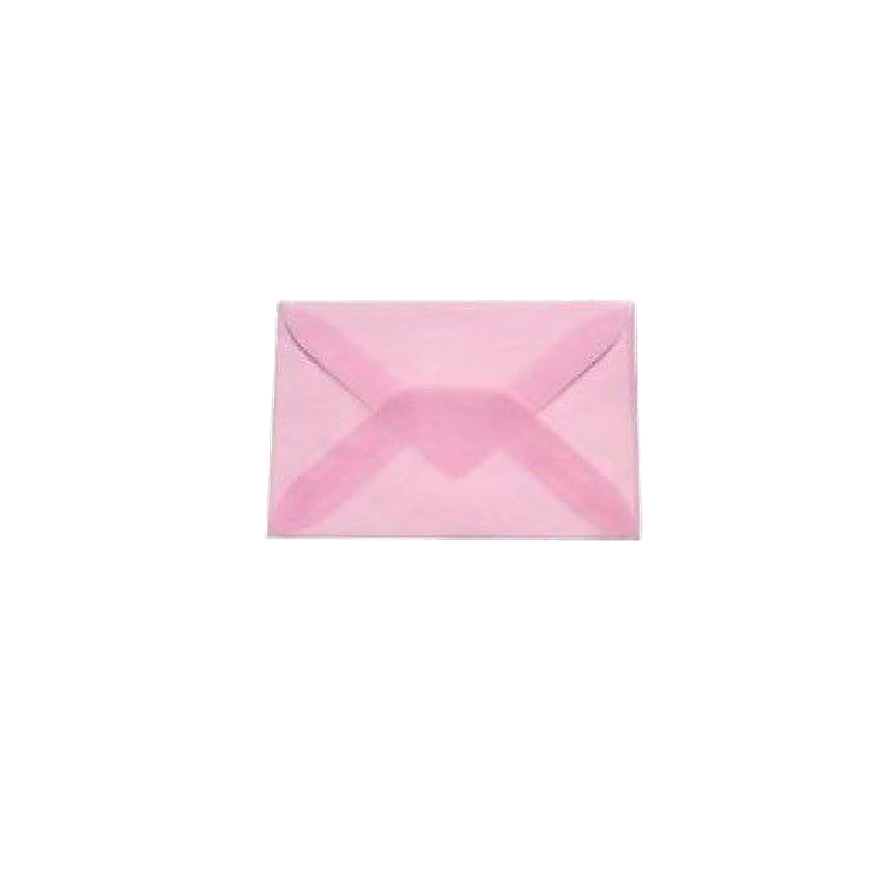
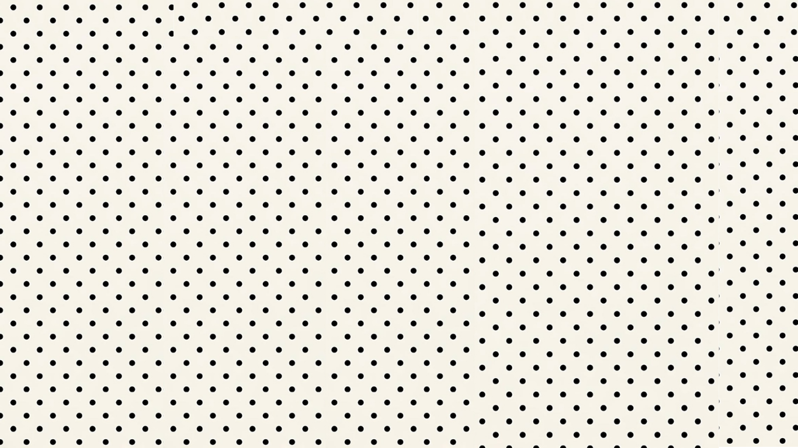

SWIT
Support Women In Tech
"For women that build the future of technology"
This website was created to orientate and give tips for women in tech.
Support Women In Tech


"For women that build the future of technology"
This website was created to orientate and give tips for women in tech.